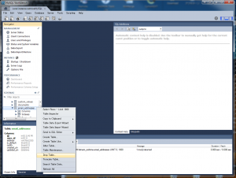
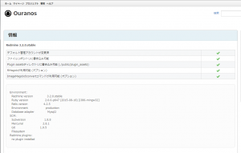

またも久しぶりにBitNami Redmine Stackを更新しました。 そしてまた、今回も更新に手間取りました(白目)。 苦労話は前回を参照。
基本のアップデート手順は以前 (2.0.3-1 to 2.1.0-0)と同じです。
バックアップ
BitNami Redmine Stack のアンインストール
復元
アップデート
です。 今は、バックアップとリストアはバッチファイルで自動になっているので、苦労はしませんが、アップデートが面倒です。 いつもGemがないだの、よくわからないエラーが出てしまい、そのたびにGoogle先生に泣きついているのですから… 今回はアップデートに絞って記録をつけます。
マイグレーション
バックアップしたSQLとプラグインを復元し終わった後は、マイグレーション作業が必要です。 その前に、プラグインは一度、どこかに退避しておきます。 スタートメニュー->BitNami Redmine Stack->Use BitNami Redmine Stack でコマンドプロンプトを起動。 以下のコマンドを順次実行 (カレントディレクトリは私の環境です)。 [code lang=”dos”] C:\BitNami\Redmine>cd apps\redmine\htdocs C:\BitNami\Redmine\apps\redmine\htdocs>bundle exec rake db:migrate RAILS_ENV=production [/code] すると、 [code lang=”dos”] (in C:/BitNami/Redmine/apps/redmine/htdocs) DL is deprecated, please use Fiddle == 20150113194759 CreateEmailAddresses: migrating ============================= – create_table(:email_addresses) rake aborted! StandardError: An error has occurred, all later migrations canceled:
Mysql2::Error: Table ‘email_addresses’ already exists: CREATE TABLE `email_addresses` (`id` int(11) auto_increment PRIMARY KEY, `user_id` int(11) NOT NULL, `address` varchar(255) NOT NULL, `is_default` tinyint(1) DEFAULT 0 NOT NULL, `notify` tinyint(1) DEFAULT 1 NOT NULL, `created_on` datetime NOT NULL, `updated_on` datetime NOT NULL) ENGINE=InnoDBC:/BitNami/Redmine/apps/redmine/htdocs/vendor/bundle/ruby/2.0.0/gems/activerecord-4.2.5/lib/active_record/connection_adapters/abstract_mysql_adapter.rb:305:in `query’ C:/BitNami/Redmine/apps/redmine/htdocs/vendor/bundle/ruby/2.0.0/gems/activerecor [/code] という長いエラーが出ます。 ‘email_addresses’というテーブルが既に存在するからテーブル作成できませーん！って怒っています。 コマンドプロンプトから削除してもいいのですが、CUIは嫌いですし、何より視覚的に中に何が入っているかがわかりにくいので、GUIツールを使います。 MySQL Workbench というツールがここから入手できるので環境に応じてダウンロード。 接続先の情報は、Redmine\apps\redmine\htdocs\config\database.yml にあります。 削除は下記のように行います。(削除する前に中身を確認してください。自己責任で。) 
{kind=link}
削除したら、bundle exec rake db:migrate RAILS_ENV=production を再度実行し、類似のエラーが出なくなるまで繰り返します。 最終的に、
email_addresses
roles_managed_roles
imports
import_items
custom_field_enumerations
をドロップしました。 結果も、 [code lang=”dos”] (in C:/BitNami/Redmine/apps/redmine/htdocs) DL is deprecated, please use Fiddle == 20151025072118 CreateCustomFieldEnumerations: migrating ==================== – create_table(:custom_field_enumerations) -> 0.0060s == 20151025072118 CreateCustomFieldEnumerations: migrated (0.0070s) ===========
== 20151031095005 AddProjectsDefaultVersionId: migrating ====================== – column_exists?(:projects, :default_version_id, :integer) -> 0.0030s – add_column(:projects, :default_version_id, :integer, {:default=>nil}) -> 0.0130s == 20151031095005 AddProjectsDefaultVersionId: migrated (0.0170s) ============= [/code] のようになりました。
起動
サービスを一度全て再起動して、ログイン、チケットの作成、閲覧、削除ができるかをテストします。 
{kind=link}
プラグインの更新
会社で使っている
redmine_work_time
redmine_knowledgebase
が3.2.0で使えなければ話になりません。 というわけでプラグインの更新です。 まず、退避したプラグインを戻し、各プラグインを最新版に更新します。 そして [code lang=”dos”] C:\BitNami\Redmine\apps\redmine\htdocs\plugins>bundle install [/code] を実行して依存関係を解決します。 が、 [code lang=”dos”] You are trying to install in deployment mode after changing your Gemfile. Run `bundle install` elsewhere and add the updated Gemfile.lock to version control.
If this is a development machine, remove the Gemfile freeze by running `bundle install –no-deployment`. [/code] なるエラーが出て先に進めない。 調べてみると、解決策が。Ruby on Rails with OIAX様の記事 によれば、
この場合は、.bundle ディレクトリにある config ファイルをVimなどのエディタで開きます。その中に、次のような書かれた箇所がありますので、その行を削除してください。 BUNDLE_FROZEN: “1” そして、もう一度 bundle update rails コマンドを実行してください。
この説明に従った後は、bundle installが成功しますので、プラグインをインストールするべく [code lang=”dos”] C:\BitNami\Redmine\apps\redmine\htdocs\plugins>bundle exec rake redmine:plugins:migrate RAILS_ENV=production [/code] を実行します。その後、問題がなければ、 [code lang=”dos”] C:\BitNami\Redmine\apps\redmine\htdocs\plugins>bundle exec rake tmp:cache:clear C:\BitNami\Redmine\apps\redmine\htdocs\plugins>bundle exec rake tmp:sessions:clear [/code] を実行して、キャッシュとセッションをクリアします。 その後、プラグインが動くかどうかをチェックします。 以上で全ての更新は完了です。